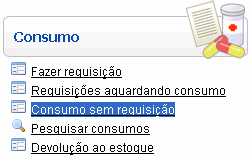
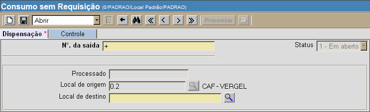
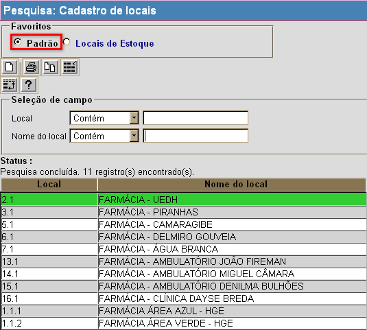
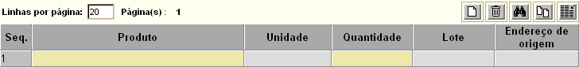
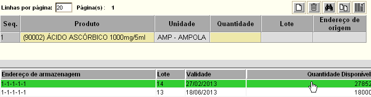

Consumo sem Requisição [ Voltar ]Utilize este formulário para efetuar um consumo sem a necessidade de requisição prévia. O formulário "Consumo sem Requisição" encontra-se dentro do menu "Consumo". 
Ao clicar no nome do formulário, o sistema exibirá a seguinte tela: 
Siga os passos abaixo para realizar um consumo sem requisição: 1º Passo: selecione um local de destino para o consumo em questão. Clique no botão [Procurar] ao lado do
campo "Local de destino"
para selecioná-lo a partir de uma listagem com os locais cadastrados no
sistema. [Procurar] ao lado do
campo "Local de destino"
para selecioná-lo a partir de uma listagem com os locais cadastrados no
sistema. Observação: certifique-se de que, ao pesquisar um local de destino, o tipo de pesquisa favorita "Setores" foi marcado (ver imagem abaixo). 
2° Passo: clique no botão  para salvar o consumo. Uma
vez salvo, um novo número é gerado automaticamente para o registro. Além disso, uma grade para
inclusão dos produtos do consumo é exibida na parte inferior da tela. para salvar o consumo. Uma
vez salvo, um novo número é gerado automaticamente para o registro. Além disso, uma grade para
inclusão dos produtos do consumo é exibida na parte inferior da tela.
4° Passo: informe os produtos, quantidades e endereços de armazenagem para o consumo. Ao especificar um produto, verifique na parte inferior da tela o(s) endereço(s) de armazenagem com estoque disponível. Selecione com um clique o endereço desejado (ver imagem abaixo). Se nenhum endereço for exibido para o produto selecionado, não há estoque disponível para o mesmo. Dica: uma vez na grade, pressione a tecla "Enter" para ir de um campo a outro. 
5° Passo: após informar todos os dados do consumo, clique no botão  para concluir o
consumo. Se desejar, clique no botão para concluir o
consumo. Se desejar, clique no botão  para visualizar a
tela de impressão da dispensação para paciente. Para imprimir o
relatório, clique no botão para visualizar a
tela de impressão da dispensação para paciente. Para imprimir o
relatório, clique no botão  [Imprimir]
do navegador. [Imprimir]
do navegador. |